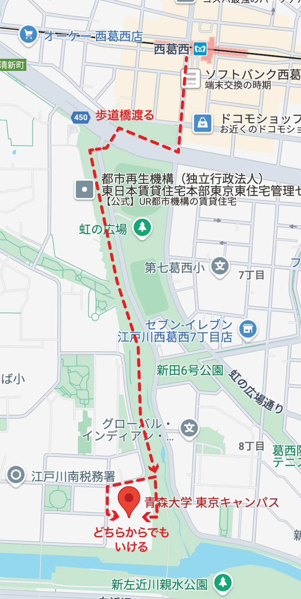
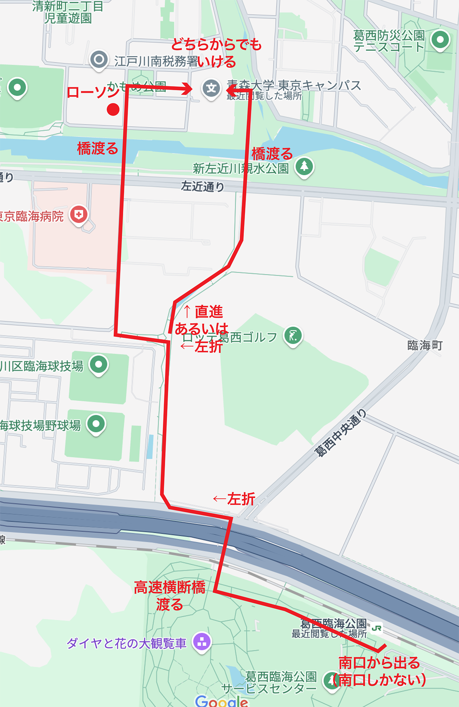

シン・ITRC 第 57 回研究会（ITRC meet57）の開催概要です．
2025年5月21日 (水) 〜 5月22日 (木)
現地会場：青森大学東京キャンパス 2F 226講義室（〒134-0087 東京都江戸川区清新町2-10-1 会場URL）
オンライン：Zoom

東京メトロ東西線西葛西駅からお越しの場合は、駅を南下、江戸川球場が見える交差点を渡らず右折し、ゆるやかなスロープをのぼって歩道橋を渡ります。あとはのどかな遊歩道をひたすら南下すると青森大学東京キャンパス東側に到着します。東側からでも西側からでも入ることができます。徒歩15〜20分程度です。

JR葛西臨海公園駅からのアクセスは、駅の階段を降りて地上に到着すると駅南側に出ますが、そのまま大観覧車を見ながら西へ進みます。しばらく進むとゆるやかな登りとなり、高速道路を横断する橋へと至りますので、北上して渡ってください。渡り切りましたら左折して西へ。遊歩道にそって北上してください。直進、あるいは途中で左折し、警察庁第二機動隊を右手に見ながら直進すると、またもや橋を渡ります。橋を渡るとローソンがあり、それを越えて右折し直進すると青森大学に到着します。徒歩20分といったところです。
産学協力研究コンソーシアム インターネット技術研究会（シン・ITRC）
無料．ただし会は有料です．
太田昌孝先生退官記念パーティ / ITRC 情報交換会として開催します．
5/13 23:59 締切です．以下から早めの申し込みをお願いします．定員に達した場合，早期に締め切らせて頂くことがあります．
(5/12 11:00 追記: 会場が変更になっていますので，ご注意下さい．)
https://mohta.peatix.com/
プログラムの詳細はこちら (随時更新中)。
| 11:30 – 13:00 | 総会 (会員のみ) |
| 13:00 – 13:05 (5) | オープニング |
| 13:05 – 13:30 (30) | デモ展示セッション |
| 13:30 – 13:40 (10) | 休憩・デモ展示 |
| 13:40 – 17:40 (240) | セッション1: 太田昌孝先生退官記念セッション |
| 18:30 - 20:30 (120) | 太田昌孝先生退官記念パーティ / ITRC 懇親会 |
| 9:30 – | 開場 |
| 10:00 – 11:30 (90) | セッション2: RIXX分科会 |
| 11:30 – 13:00 (90) | 昼食・デモ展示 |
| 13:00 – 14:30 (90) | セッション3: CIS分科会 |
| 14:30 – 14:45 (15) | 休憩・デモ展示 |
| 14:45 – 15:15 (30) | セッション4: UA分科会 |
| 15:15 – 16:15 (60) | セッション5: 一般発表 |
| 16:15 - 16:25 (10) | 休憩 |
| 16:25 – 16:55 (30) | セッション6: ネットワーク報告 |
| 16:55 – 17:00 (5) | クロージング |
一般講演 (今回は口頭発表のみ)を募集しています．以下からお申し込み下さい．締め切りました．
https://docs.google.com/forms/d/e/1FAIpQLSf8mCvPf3nydfB71N3ScaTw16Q_C-AdC5hHiYizl5JKB3-VRQ/viewform?usp=dialog
デモ展示を募集しています．以下からお申し込み下さい．締め切りました．
https://docs.google.com/forms/d/e/1FAIpQLSfLOqFGwd0tLR34Bar2kgxY2uRDEbe-62kAVZN_M-2rbaS4cg/viewform?usp=dialog
今回の会場ネットワークは，アライドテレシス株式会社さまより，ルータ（AT-ARX200S-GTX）2台，PoE スイッチ（AT-x230-18GP）2台，無線LAN AP（AT-TQ6602 GEN2）6台を貸与頂き，御助言の下，構築しました．ここに謝意を表します．
また，会場ネットワークは，式町 龍聖さん，古賀 陽光さん (九州産業大学)，ジョシュア・リウ，リョ・ハイカ，奥山 瑛斗さん，松谷 錬 さん (青森大学) に設計・構築して頂きました．ここに謝意を表します．